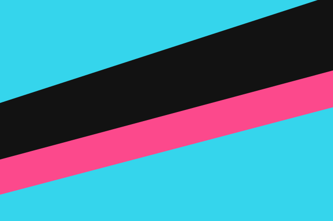

فاینلاین
خطهای باریک، فضای خالی و جزئیات ریز.

جمعههاخطهای باریک، فضای خالی و جزئیات ریز.
رنگ تخت و فرمهای بهیادماندنی.
یک ترکیب تازه برای ادامهٔ یک طرح قدیمی.
هر هنرمند با زبان تصویری خودش طراحی میکند. طرحها را ببین و برای گفتوگو، سبک دلخواهت را انتخاب کن.
دیدن طرحهاترکیبی از خانههای رنگی، دایره و فضای خالی.
ریتمی از قوسها با یک ترکیب محدود و جسور.
دایرههای هممرکز برای طراحی خطی و ظریف.
سطوح مشکی در کنار خطوط باریک و یک رنگ روشن.
چند مرجع تصویری و حدود اندازهٔ دلخواهت را آماده کن.
از گالری یک طرح بردار و در فایل درخواست، تغییرات دلخواهت را یادداشت کن.
سبک و اندازهٔ طرحی را که در ذهن داری برای مشاوره یادداشت کن.
 انتخاب این قالب
انتخاب این قالب